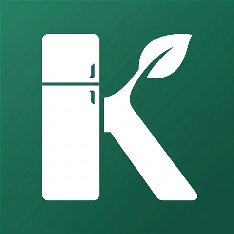
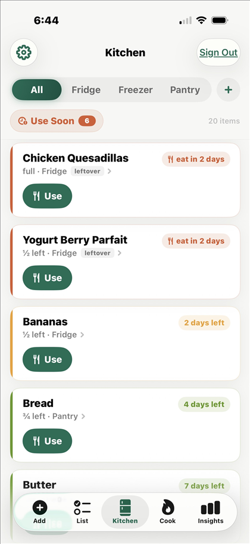
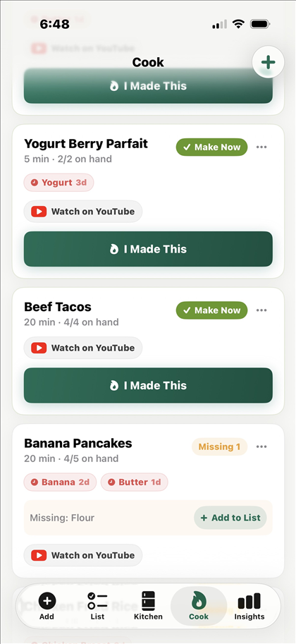
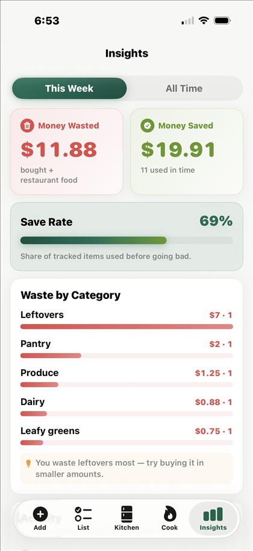

Kepta
Waste Less, Save Money
Kepta keeps track of the food in your fridge, freezer, and pantry, warns you before it goes bad, helps you cook what you already have, and shows what your waste really costs, charged only for the part you actually throw away. It's free, your whole family can share one kitchen, and there are no ads, no tracking, and no item limits.
Download on the App StoreKepta is free. The whole app, family sharing included. No subscription needed.
How it works
Four habits, each a few seconds long. That's the whole system.
Add in seconds
Tap a chip for staples like milk or eggs, or type a couple of letters and pick from the suggestions. Kepta guesses the category, the spot, and the shelf life for you. There's no barcode scanner yet. For now, a tap or two covers most items.
Colors tell you what to use
Every item gets a freshness color based on its own shelf life, backed by a USDA-researched database. Fresh ground beef shows green, not red, because freshness is relative to the food, not a countdown that treats everything the same.
Cook what you have
Around 80 recipes, ranked by what's actually in your kitchen. Dishes you can make right now come first, and anything that rescues expiring food gets a boost. Most recipes link to a YouTube video, and you can save your own.
See honest money
When food gets used, you saved what it cost. When it gets tossed, you wasted it. Kepta adds up the prices you enter, and if you skip one it uses a plain typical price you can change. No AI ever guesses a price.
A look inside
Three screens do most of the work.



One kitchen for the whole family, free
Your kitchen has a six-character invite code. Share it, and family members join your kitchen from their own phones. Everyone sees the same shelves, the same list, the same leftovers. When someone finishes the milk, it's gone from everyone's kitchen at once.
ABC-123Also included, also free
- ●Daily reminders that name real items ("use the chicken"), not generic nags
- ●Shopping list grouped by aisle, flowing straight into your kitchen with prices
- ●Custom places: name your own fridges, freezers, and cupboards
- ●Works offline: browse your kitchen and queue new adds; everything syncs when you're back
- ●One-tap undo everywhere, so mistakes cost nothing
- ●No item limits, no ads, no tracking. Your email and your food data are used to run the app, nothing else
- ●Delete your account in the app, any time
How that compares, plainly
As of September 2026, Eatvora offers household sharing in its $9.99/month Plus tier and caps its free plan at 25 pantry items. To be fair, Eatvora offers things Kepta doesn't have yet, like barcode scanning, receipt scanning, and AI recipe suggestions. Full comparison.
Free-tier item caps are common: 100 items in KitchenPal, 200 in Pantry Check, 500 in NoWaste (as of September 2026). Kepta has no item limits at all.
And if you're here because CozZo shut down: the cloud infrastructure behind it was shut down, and support ended December 30, 2025. We're sorry; it was a good app, and its farewell was a classy one. Here's how Kepta lines up.
The honest-money principle
Savings numbers are easy to inflate. Three rules keep the math believable:
Type the price once and that's what counts. Skip it, and Kepta uses a plain typical price for that kind of food, which you can change any time. No AI ever guesses a price.
Homemade meals are counted as dishes cooked, never converted into fake dollar "savings." A home-cooked dinner is a win; it isn't $14.37.
Partial use charges proportionally. Use half of a $10 roast, and $5 moves to saved. Toss the other half, and $5 moves to wasted. The math always adds up.
Quick questions
Is Kepta free?
Yes. Version 1 is completely free: the inventory, family sharing, recipes, reminders, and the money numbers, with no item limits and no ads. A paid tier with deeper reports may come later; the core app stays free.
What phones does it run on?
iPhone. Kepta is an iOS app. Android is on the long-term list, but we won't promise a date we can't keep.
How does the family kitchen work?
Your kitchen has a six-character invite code, like ABC-123. Family members type it in on their own phones and everyone shares the same kitchen: same shelves, same list, same leftovers. Sharing is free.
Do you sell my data?
No. Your email and your food data are used to run the app, nothing else. No ads, no tracking, and you can delete your account and everything in it from inside the app at any time.
Where do I get it?
Kepta is on the App Store now, free. Download it here.
Why "Kepta"?
From kept: a well kept kitchen, money you keep, recipes worth keeping. It's also the Lithuanian word for baked, which felt right for an app that would rather see your food cooked than tossed.
Kepta is out
Free on the App Store, family sharing included. Grab it and put your kitchen in it.
Download on the App Store